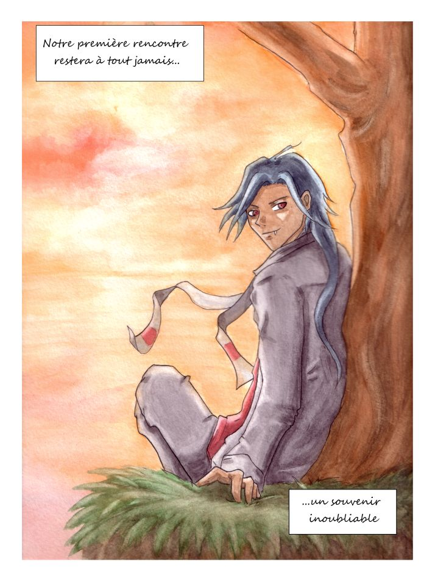
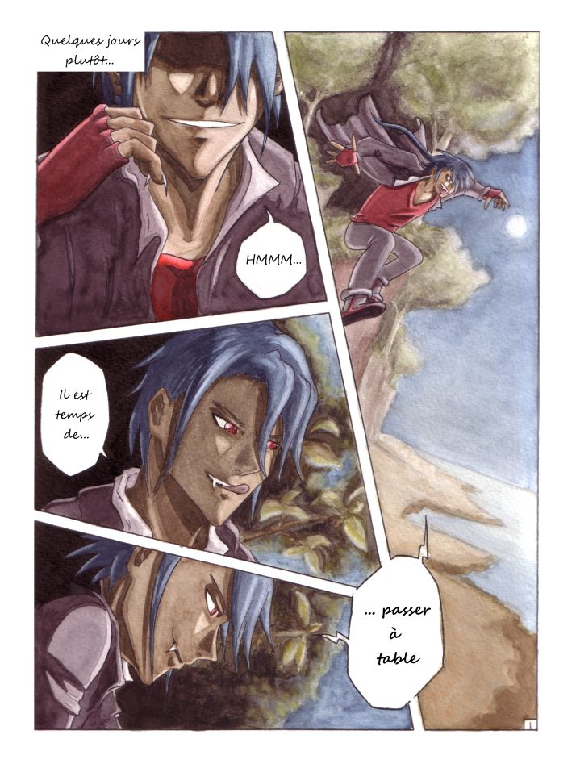
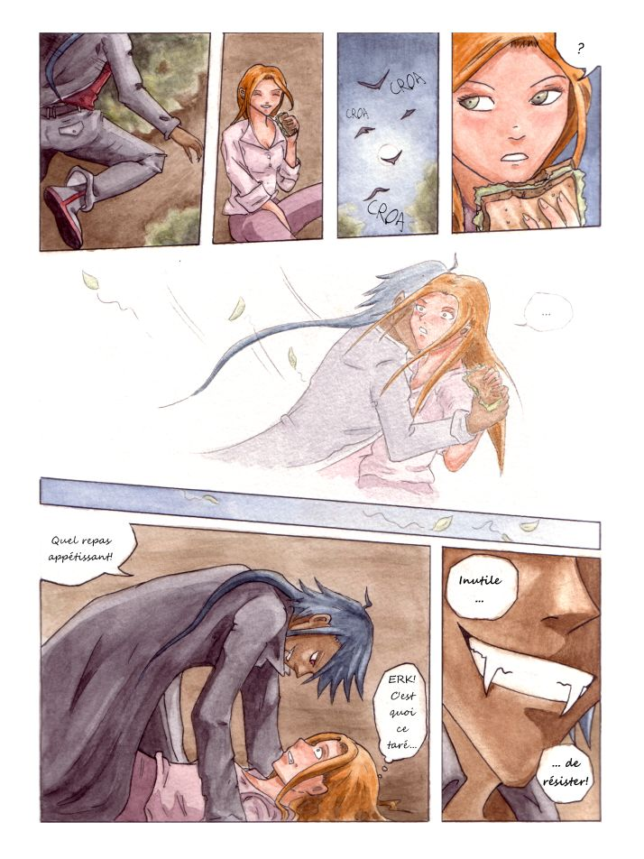
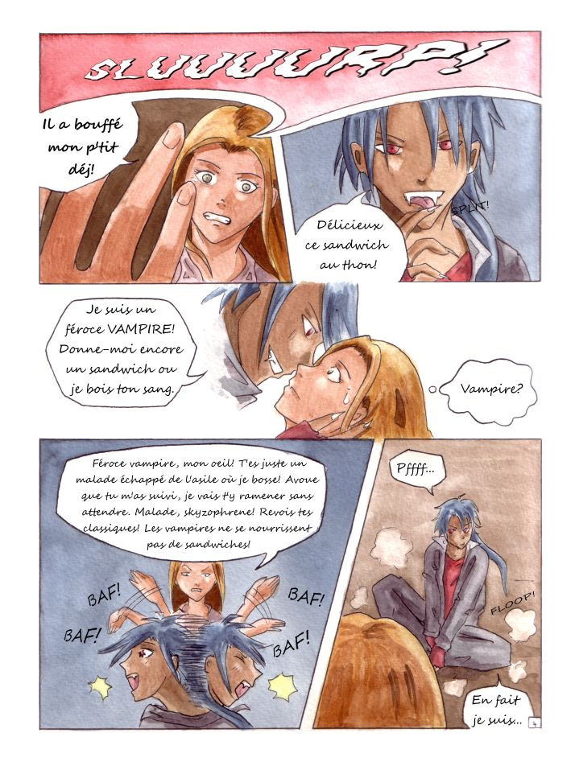
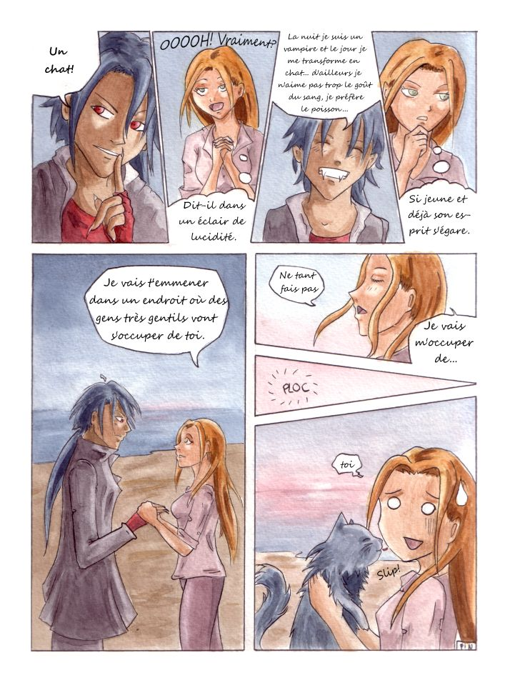

Ancienne version · pages 1 à 5










Ancienne version · les cinq planches originales
Il s’agit de l’ancienne version de la bande dessinée. Une nouvelle version est en cours de création (depuis il y a 15 ans... oups) et disponible sur le site. Et en les revoyant plus de quinze ans plus tard, je me rends compte que l’ancienne version est en fait meilleure que la nouvelle, avec des couleurs et une ambiance plus réussies que cette “nouvelle” version un peu bizarre. Cliquez sur une page pour l’agrandir, puis utilisez les flèches gauche et droite de votre clavier pour naviguer.
Note du futur moi : en revoyant tout ça plus de quinze ans plus tard, je me rends compte que l’ancienne version est en fait meilleure que la nouvelle. Les couleurs et l’ambiance y fonctionnent mieux, alors que la “nouvelle” version a un côté un peu bizarre par moments…




